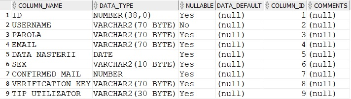
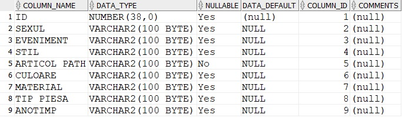
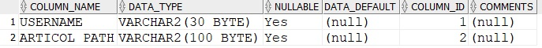
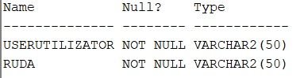
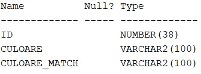
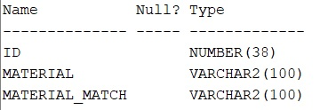
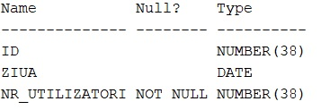
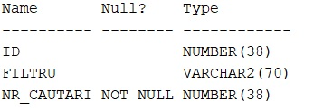

Community Draft
Să se conceapă o aplicație Web capabilă să furnizeze utilizatorilor (autentificati sau nu) sfaturi referitoare la asortarea – cromatică, pe baza materialelor și/sau a stilului personal – a garderobei proprii (piese de îmbrăcăminte și de încălțăminte, plus accesorii) si a rudelor apropiate, in funcție de sezon, moment al zilei, eveniment, factori culturali și alte restrictii specifice (dress code).
Se vor pune la dispoziție garderobe predefinite – editabile și preluate din surse externe (se va implementa suportul pentru import al datelor disponibile în format JSON și XML). Sistemul va realiza, de asemenea, managementul utilizatorilor și a regulilor de asortare vestimentară la nivel de individ sau grup.
Functionalitati de baza pe care le indeplineste siteul:
Permite utilizatorilor sa isi creeze conturi, si sa isi inspire tinutele din cele ale prietenilor/rudelor pe care ii are adaugati.
Utilizatorii (autentificati sau nu) pot cauta inspiratie de tinute pentru tot felul de ocazii, tinute pe gusturile lor, acestea alese cu mare grija pe baza unor reguli de asortare cromatica si pe baza materialelor din care sunt confectionate hainele. Iar pentru ca moda se schimba de la o zi la alta, administratorul paginii poate supraveghea care a fost cel mai cautat trend, poate schimba oricand regulile de asortare pentru a oferi utilizatorilor cea mai placuta experienta.
Siteul a fost impartit in trei parti privind functionalitatea acestuia, pentru ca munca echipei sa fie distribuita uniform, astfel siteul este format din partea de autentificare, creare cont, pagina de profil de care s-au ocupat Salavastru Roxana-Maria, partea de administrare a datelor, pagina administratorului care cuprinde mai multe subpagini si informatii despre activitatea utilizatorilor, componenta de care s-a ocupat Lazarescu Simona si partea de filtrare a tinutelor, manipulare a garderobelor, pagina de filtrare a tinutelor si optiunea de a salva articolele preferate sau de la sterge pe cele deja preferate de care s-a ocupat Goldan Anamaria.
Utilizatorii care au ajuns pentru prima data pe aceasta pagina, si inca nu au un cont, sau utilizatorii care inca nu si-au facut un cont au in continuare posibilitatea de a vizualiza tinute pe placul si necesitatile lor, cu dezavantajul ca atunci cand revin pe pagina, articole pe care acestia le-au vizualizat in trecut, s-ar putea sa nu mai apara sau sa fie greu de gasit din moment ce nu au un cont pe care sa le salveze. Deci este o optiune inca convenabila pentru a satisface necesitatea unei tinute pe moment.
Pentru a-si crea un nou cont, utilizatorii trebuie sa apese pe butonul de Login din meniul situat in partea de sus a ecranului, si din moment ce nu au deja un cont, vor trebui sa apese butonul "new account" pentru a-si crea unul. Pentru ca tinem la securitatea si integritatea datelor, dar si cea a siteului, datele de intrare din acest formular de autentificare vor fi manipulate cu grija astfel incat un eventual atac sa fie prevenit. Urmatoarele restrictii asupra datelor de intrare sunt inpuse:
In ceea ce priveste contul de administrare, deoarece dorim sa realizam un management cat mai bun al aplicatiei am implementat urmatoarele functionalitati:
Pagina principala paote fi folosita de catre utilizatorii autentificati sau nu, cu mica diferenta ca utilizatorii neautentificati nu pot sa salveze articole pe pagina de profil. Pe aceasta pagina sunt sugerate garderobe care respecta anumite reguli de stil cum ar fi asortarea cromatica sau asortarea materialelor.
Pe aceasta pagina utilizatorii pot filtra tinute in functie de preferintele acestora, factorii sociali si culturali la care vor lua parte, sunt propuse piese vestimentare si din inspiratiile rudelor/prietenilor utilizatorului daca acesta este conectat si are rude/prieteni ce au salvat anumite piese preferate.
Bazele de date sunt stocate local, este urilizat limbajul pl/sql; Tabela Utizlizatori - contine informatiile necesare pentru crearea contului unui utilizator. 
Tabela articole contine toate detaliile necesare unei poze pentru a putea fi utilizata si afisata in cazul in care se potriveste cu filtrele aplicate sau cu regulile de asortare 
Tabela articole_preferate face legatura intre fiecare utilizator si articolele salvate de acesta ca fiind articole preferate.

Tabela rude retine ce prieteni/rude are adaugat fiecare utilizator, pentru a ii putea recomanda sugestii de outfit inspirate din preferintele acestora.

Tabela match_cromatic retine legatura intre culori care se potrivesc intre ele. 
Tabela match_material retine ce materiale se potricesc intre ele, pentru a furniza tinute in care materialele se potrivesc.

Tabela statistica_vizitatori retine ce trafic are pagina.

Tabela statistica_filtre retine care sunt cele mai folosite filtre, deci, cele mai la moda tendinte ale momentului.

Pentru a avea o mica baza, am creat un schelet al paginii, care ulterior a fost modificat si extins dupa necesitati. Acest prim plan mi-a permis sa ma focusez pe partea de logare, creare a conturilor.
Initial am creat meniul din partea superioara a paginii si cateva pagini in care urmau sa lucreze colegele mele.
Am realizat conexiunea cu baza de date si am inceput sa verific daca toate datele sunt stocate si nu exista probleme dupa care
a urmat validarea datelor pe care utilizatorii le introduc, pentru a nu compromite site-ul si pentru a salva intr-o maniera sigura datele lor in tabela utilizatori.
Urmeaza sa semnalez problemele care apar atunci cand utilizatorii introduc date neadecvate, prin mesaje de eroare catre acestia.
Pentru o mai buna gestiune a conturilor, am impus restrictia de a avea fiecare utilizator un email/gmail unic si valid, verificarea facandu-se prin trimiterea unui link cu cod unic pe emailul folosit in crearea contului.
Urmeaza etapa de creare a unei pagini de profil pentru utilizatori astfel incat utilizarea siteului sa fie mai intuitiva si comoda.
Pe partea tehnica, a venit momentul in care retin date in variabilele $_SESSION pentru a supraveghea pe toate paginile siteului daca utilizatorul este autentificat sau nu. Butonul de Login din meniul de sus va avea o dubla intrebuintare, va conduce utilizatorul la pagina de profil, daca acesta este autentificat, sau la pagina de autentificare in caz contrar.
A urmat partea de dezvoltare a paginii de profil, pentru a adauga rude si prieteni daca acesta doreste, si sa le stearga.
Termin cu ultime detalii de css responsive pentru pagina de utilizatori, adaugarea unor detalii de securitate, cum ar fi utilizarea functiei htmlspecialchars() pentru ca un eventual atacator sa nu poata compromite integritatea paginii si inserarea datelor in tabela astfel incat sa prevenim tentativele de tipul sql injection.